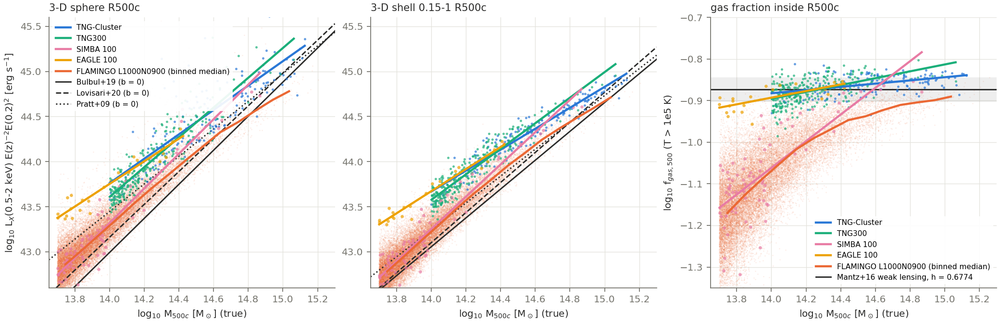

The L_X-M500c relation across simulations (2026-10-27)¶
A comparison made on the branch lx-gas-explore, continuing The soft-band luminosity excess: alternatives to the emission model (2026-10-27). It tests whether the
soft-band excess of TNG-Cluster is a property of the TNG model, shared by other cluster simulations, or a feature
of the comparison with the observed relations.
Since 2026-10-30 (STATUS, “Closed at the integration”): the node job of section 5 and the open points of sections 4 to 6 are superseded by the L_X gap test through the mock pipeline (-0.33 dex FLAMINGO L1_m8 against TNG-Cluster at matched true mass); the job was not run.
The excess is specific to the TNG model and is shared by EAGLE. It is not a feature of the comparison: the same band, aperture, mass definition and emission code bring FLAMINGO, whose gas fractions are calibrated to observations, to within 0.07 dex of Lovisari+20 and Pratt+09 at 5e14 Msun.
At 5e14 Msun. TNG-Cluster is 0.27 dex brighter than FLAMINGO.
About 0.09 dex of this is the gas fraction (0.139 against 0.125, squared).
About 0.13 dex sits inside 0.15 R500c, in the core.
About 0.05 dex remains in the shell 0.15-1 R500c beyond the gas fraction.
At 2e14 Msun. The relation follows the gas fraction across all five simulations. The two models with f_gas = 0.135 (TNG and EAGLE) are 0.23-0.37 dex brighter than the two with f_gas of about 0.10 (SIMBA and FLAMINGO).
FLAMINGO’s AGN cut. Excluding gas recently heated by AGN changes the luminosity of FLAMINGO’s clusters by less than 0.001 dex.
Data and use. SIMBA and EAGLE are used through their TNG-format conversion on Vera. Its readme asks users to contact the author of the conversion before use; this has not been done, so those two simulations are an internal comparison, not for publication as they stand. The data themselves are public.
Products. Scripts are in tngxmm_dev/LXEXPLORE/xsim/, copied to internal/ledger_tests/lx_gas_explore/xsim/:
xsim_tngfmt.py: the TNG-format simulations;flamingo_soap.py: the FLAMINGO catalogues;flamingo_particles.pyandflamingo_recompute.py: the FLAMINGO particle check;xsim_summary.py: fits, table and figure.
Tables are in xsim/out/, the main one being xsim_table.csv. The ledger entries are section D of
docs/assumptions/assumptions.yml (xsim.*).
1. One definition for all¶
Luminosity.
Rest-frame 0.5-2 keV, summed over the gas inside the 3-D sphere of R500c about the halo centre.
Also in the shell 0.15-1 R500c (core excised).
Computed with the production emission of the pipeline: the APEC 3.1.3 reference table at Z / 0.019366; the cell’s own X_H, x_e and T; T > 3e5 K; not star-forming.
The sphere is used because it is the one aperture that all sources provide; FLAMINGO’s SOAP catalogue has no R500c cylinder. The projected cylinder is 0.011 dex brighter (median of the TNG-format halos; 0.030 for SIMBA). The observed relations are projected, so every offset below is low by about that amount.
Mass. The true M500c of each halo catalogue.
Hydrostatic mass. For the TNG-format simulations the hydrostatic axis uses the X-ray-like estimator X_Tsl_nemed of
compute_hse_mass.py(n_e shell median, T_sl, mu = 0.59), computed on the FoF gas.Gas fraction. Gas above 1e5 K inside R500c, divided by M500c.
Redshift.
Halos at z = 0 and z of about 0.2 are pooled, with L scaled to z = 0.2 by E(z)^2.
The offset from an observed relation is taken halo by halo, against the relation evaluated at the halo’s own z with its own evolution: E(z)^2 (1+z)^-0.20 for Bulbul+19, (E(z)/E(0.2))^gamma with gamma = 0.462 (core included) and 1.325 (core excised) for Lovisari+20 Table 2, and E(z)^(7/3) for Pratt+09.
The z = 0 and z of about 0.2 snapshots share their halos, so the two are not independent samples.
Fits. OLS of log10 y on log10(M / M_piv), with a bootstrap over halos (1000 draws). The normalisation is quoted at 5e14 Msun, and at 2e14 Msun for every simulation because SIMBA and EAGLE have few massive halos.
Simulations.
TNG-Cluster.
100 primary zoom targets at snapshot 84 (z = 0.2) and 60 at snapshot 99 (z = 0), evenly spaced in mass rank with M500c > 1e14 Msun; 160 of the 691 halo-snapshots.
FoF gas, read with
loadHalo. The FoF gas inside R500c differs from the sphere gas by 0.001 dex (DECISIONS, “The soft-band luminosity excess of TNG-Cluster”).The net-cooling cut is applied.
TNG300-1. Every halo with M500c > 1e14 Msun at snapshots 84 and 99: 115 + 159 = 274.
SIMBA (L100n1024FP). Every halo with M500c > 5e13 Msun at snapshots 151 (z = 0) and 140 (z = 0.19): 73 halos, 17 above 1e14 Msun.
EAGLE (L68n1504FP = Ref-L0100N1504). The same selection at snapshots 28 and 26 (z = 0, 0.18): 24 halos, 11 above 1e14 Msun.
SIMBA and EAGLE, common points.
The particle volume is V = m / rho.
Star-forming particles are excluded through their SFR.
The conversion carries a GFM_CoolingRate field although its readme calls that field not available. It is therefore not used. Applying it changes nothing: 0.000 dex for all halos of SIMBA z = 0 and EAGLE z = 0.
No flag for decoupled SIMBA winds is used.
FLAMINGO L1000N0900 HYDRO_FIDUCIAL (public release, Helly et al. 2026).
Every central halo with M500c > 1e14 Msun at snapshots 77 (z = 0) and 73 (z = 0.2): 5070 + 3878 = 8948. Also 16 496 halos between 5e13 and 1e14 Msun for the figure.
The quantities come from the SOAP SO/500_crit catalogue (VELOCIraptor-based files in
SOAP/): TotalMass, HotGasMass, and the rest-frame X-ray luminosities of band 3, ROSAT 0.5-2 keV. The band order is from the SOAP documentation and SWIFTsrc/extra_io/EAGLE/extra.h.Variants used: total, core-excised, and without recently AGN-heated gas.
The datasets are lossy-compressed. HDF5 2.0 refuses them, so they are read with h5py 3.7 / HDF5 1.10 (the embed environment).
2. FLAMINGO: verification from the particles¶
FLAMINGO’s particle luminosities come from Cloudy tables. Those tables include density and per-element dependence;
the particles are summed above 1e5 K and only if not star-forming (Braspenning et al. 2024; SWIFT extra.h). For 37
halos at z = 0 and 36 at z = 0.2, spanning 1e14-1.8e15 Msun, I read the snapshot particles inside R500c through
the SWIFT cell index and recomputed the luminosity with our emission.
z = 0.
The sum of the snapshot’s particle luminosities equals SOAP to better than 1e-3.
Our emission is +0.044 dex above FLAMINGO’s (median; +0.025 at 5e14 Msun, with a slope of -0.038 per dex). This is the APEC 3.1.3 complete table against FLAMINGO’s Cloudy tables.
Our T > 3e5 K floor and FLAMINGO’s 1e5 K floor give the same sum.
z = 0.2.
The SOAP observer-frame luminosity is 0.239 dex above the sum of the same particles’ observer-frame luminosities. That is (1+z)^3 = 1.73 (0.238 dex).
The gas masses agree to 1e-4, and the electron-to-hydrogen ratio of the hot gas is 1.17 at both redshifts. The particles and the densities are therefore read consistently.
Our rest-frame emission is +0.038 dex above SOAP’s rest-frame value divided by (1+z)^3, consistent with z = 0.
With the factor removed, the FLAMINGO relation rises from z = 0 to 0.2 by +0.081 dex. E(z)^2 predicts 0.087. With the factor kept, it would rise by +0.32 dex.
I conclude that the SOAP X-ray luminosities of this catalogue version are (1+z)^3 too high at z > 0. This is a finding about the files on Vera, verified on 36 halos at one redshift. It is not a statement about SOAP in general.
What enters the comparison. FLAMINGO is entered as SOAP times the ratio measured per snapshot, which is our emission applied to FLAMINGO’s gas.
3. Results¶
Fits. Rest-frame 0.5-2 keV, sphere R500c, true M500c, scaled to z = 0.2. Normalisation is log10 L [erg/s] at the pivot. The offset is log10 L_sim - log10 L_obs at the pivot, observed relations at b = 0, with an error of 0.002-0.04 dex.
simulation |
pivot |
n |
slope |
norm |
offset Bulbul / Lovisari / Pratt |
f_gas |
|---|---|---|---|---|---|---|
TNG-Cluster |
5e14 |
160 |
1.35 +- 0.07 |
44.706 +- 0.023 |
+0.39 / +0.25 / +0.20 |
0.139 |
TNG300 |
5e14 |
274 (14 above 4e14) |
1.65 +- 0.06 |
44.76 +- 0.03 |
+0.44 / +0.29 / +0.26 |
0.145 |
FLAMINGO |
5e14 |
8948 |
1.61 +- 0.01 |
44.440 +- 0.005 |
+0.12 / -0.03 / -0.07 |
0.125 |
TNG-Cluster |
2e14 |
160 |
1.35 |
44.168 +- 0.027 |
+0.60 / +0.44 / +0.27 |
0.135 |
TNG300 |
2e14 |
274 |
1.65 |
44.105 +- 0.012 |
+0.54 / +0.36 / +0.21 |
0.135 |
EAGLE |
2e14 |
24 (11 above 1e14) |
1.25 +- 0.07 |
44.130 +- 0.026 |
+0.56 / +0.38 / +0.23 |
0.135 |
SIMBA |
2e14 |
73 (17 above 1e14) |
1.92 +- 0.09 |
43.896 +- 0.040 |
+0.33 / +0.15 / -0.00 |
0.108 |
FLAMINGO |
2e14 |
8948 |
1.61 |
43.800 +- 0.002 |
+0.23 / +0.05 / -0.10 |
0.103 |
Core excised (shell 0.15-1 R500c against the core-excised relations): slope and offset Bulbul / Lovisari / Pratt.
simulation |
pivot |
slope |
offset Bulbul / Lovisari / Pratt |
|---|---|---|---|
TNG-Cluster |
5e14 |
1.16 +- 0.03 |
+0.30 / +0.20 / +0.20 |
TNG300 |
5e14 |
1.42 +- 0.03 |
+0.39 / +0.28 / +0.29 |
FLAMINGO |
5e14 |
1.56 +- 0.01 |
+0.16 / +0.06 / +0.06 |
EAGLE |
2e14 |
1.23 +- 0.05 |
+0.50 / +0.42 / +0.36 |
SIMBA |
2e14 |
1.79 +- 0.07 |
+0.25 / +0.17 / +0.11 |
FLAMINGO |
2e14 |
1.56 |
+0.18 / +0.10 / +0.04 |
Core share. Core excision lowers the normalisation at 5e14 Msun by 0.23 dex in TNG-Cluster and by 0.10 dex in FLAMINGO.
Hydrostatic axis. L against the X-ray-like hydrostatic M500, with offsets from the relations at that mass (Lovisari+20 and Pratt+09 rest on hydrostatic-type masses):
simulation |
pivot |
median M_X / M500c |
offset Bulbul / Lovisari / Pratt |
|---|---|---|---|
TNG-Cluster |
5e14 |
0.70 |
+0.56 / +0.41 / +0.37 |
TNG300 |
5e14 |
0.79 |
+0.47 / +0.32 / +0.29 |
SIMBA |
2e14 |
0.84 |
+0.40 / +0.23 / +0.07 |
EAGLE |
2e14 |
0.82 |
+0.50 / +0.32 / +0.17 |
FLAMINGO has no hydrostatic mass in SOAP, and its particles were read only to 1.05 R500c, so it has no entry.
FLAMINGO without recently AGN-heated gas. The luminosity changes by -0.0001 dex (z = 0) and -0.0007 dex (z = 0.2) on average. 0.3 and 1.2 per cent of halos change by more than 0.01 dex, by at most 0.3 dex.


The figure shows L_X(0.5-2 keV)-M500c in three panels:
left: the sphere R500c;
middle: the shell 0.15-1 R500c;
right: the gas fraction above 1e5 K.
TNG-Cluster, TNG300, SIMBA and EAGLE are drawn as halos with fits; FLAMINGO as halos with a binned median. The
observed relations are at z = 0.2 and b = 0; Mantz+16 is the weak-lensing gas fraction for h = 0.6774. Script:
internal/ledger_tests/lx_gas_explore/xsim/xsim_summary.py. All luminosities of the figure are intrinsic sums over
the gas, so the image measurement does not enter; its L_X(1 Mpc) reads the mocks 0.071 dex low in the median (6,967
TNG-Cluster views of the v1.0.1 trees, an earlier configuration; Science definitions, L_X).
4. Interpretation¶
The comparison is not the cause.
FLAMINGO is analysed with the same band, sphere, true mass and emission code. It lies -0.03 and -0.07 dex from Lovisari+20 and Pratt+09 and +0.12 from Bulbul+19 at 5e14 Msun.
A model can therefore meet the observed relations through this comparison. The offset against Bulbul+19 remains in every model; Bulbul+19 is the one reference on non-hydrostatic masses.
The excess tracks the gas fraction.
At 2e14 Msun, TNG-Cluster, TNG300 and EAGLE (f_gas = 0.135) are at 44.10-44.17. SIMBA and FLAMINGO (f_gas 0.108 and 0.103) are at 43.90 and 43.80.
f_gas squared accounts for about 0.2 of the 0.3-0.37 dex between them.
FLAMINGO’s gas fractions are calibrated to observed ones in groups and clusters, with a hydrostatic-bias prior; at this resolution the calibration covers only 3e13 to 2.3e14 Msun. TNG and EAGLE are not calibrated this way, and TNG groups are known to be gas-rich (Pop+22, p. 11).
At cluster mass the core matters as much as the gas fraction.
At 5e14 Msun, TNG-Cluster exceeds FLAMINGO by 0.27 dex in the sphere and by 0.14 dex in the shell. The gas fraction, 0.139 against 0.125, accounts for 0.09 dex of each.
So about 0.13 dex comes from inside 0.15 R500c: TNG-Cluster’s cores, its cool-core population, are denser than FLAMINGO’s.
About 0.05 dex in the shell remains beyond the gas fraction, which points to profile shape.
This agrees with the budget of DECISIONS (“density-profile shape concentrated inside 0.5 R500”, “gas fraction squared”) and puts more weight on the core than on the gas fraction.
FLAMINGO’s “without recent AGN heating” luminosity changes nothing. The 15 Myr exclusion removes gas that emits almost nothing in 0.5-2 keV inside R500c. It is not a lever on the cluster relation, and TNG outputs could not reproduce it anyway.
Slope.
TNG-Cluster’s slope (1.35 +- 0.07) is the flattest, together with EAGLE (1.25 +- 0.07).
TNG300 has 1.65 +- 0.06 over 1-3e14 Msun and FLAMINGO 1.61 +- 0.01; the observed slopes are 1.53-1.89.
TNG300 and TNG-Cluster run the same model. Over the masses they share, TNG-Cluster is brighter at the low end (44.17 against 44.11 at 2e14 Msun) and fainter at 5e14 Msun (44.71 against 44.76, the TNG300 value extrapolated from 14 halos above 4e14 Msun). The difference in slope is therefore not a difference of physics.
I did not resolve whether it comes from the mass range (curvature of the relation), from TNG-Cluster’s target selection (primary zoom targets chosen by z = 0 halo mass) or from the small number of TNG300 halos above 4e14 Msun (14).
FLAMINGO’s slope is close to the observed ones. The mass dependence of the TNG-Cluster excess (+0.60 dex against Bulbul+19 at 2e14, +0.39 at 5e14) is a feature of TNG-Cluster.
Hydrostatic axis. At fixed X-ray-like hydrostatic mass the TNG excess grows: the median M_X/M500c is 0.70 for TNG-Cluster, against 0.79-0.84 for TNG300, SIMBA and EAGLE. Against the two hydrostatic-mass references it is +0.41 and +0.37 dex at 5e14 Msun.
The excess of TNG-Cluster is a property of the TNG model. It comes from its gas fraction and its dense cores, not from the mock pipeline or the emission convention. A calibrated model (FLAMINGO) analysed the same way meets two of the three references. The author’s decision to report the excess as a property of TNG-Cluster is supported.
5. Node job (not run)¶
The TNG-Cluster numbers rest on 160 of 691 halo-snapshots at z = 0 and 0.2.
Job. Run xsim_tngfmt.py over all primary targets at snapshots 72-99 (about 1650 halo-snapshots).
Cost. On the login node a halo took 10-35 s, and memory is 4-12 GB per worker. That is about 10 h of one core, or under 1 h on one node.
A FLAMINGO hydrostatic mass would need the particles to 3 R500c for a subset; that is about 1 h on the login node and was not done.
6. Not verified¶
The (1+z)^3 factor of the SOAP X-ray luminosities was checked at z = 0.2 on 36 halos, not at z = 0.5 (snapshot 67). There the uncorrected relation rises by +0.78 dex from z = 0, close to the +0.24 of E(z)^2 plus the +0.53 of (1+z)^3, which suggests the same factor. Neither the SOAP authors nor the FLAMINGO team were asked.
The SIMBA and EAGLE conversions: their author was not contacted. The SIMBA wind particles are not identified.
The gas fraction of FLAMINGO above 2.3e14 Msun is an extrapolation of its calibration; its resolution is 2000 to 30 000 particles inside R500c.
The cause of the TNG-Cluster / TNG300 slope difference.
The observed f_gas at 2e14 Msun is not drawn. Mantz+16 covers 4e14-2e15 Msun.